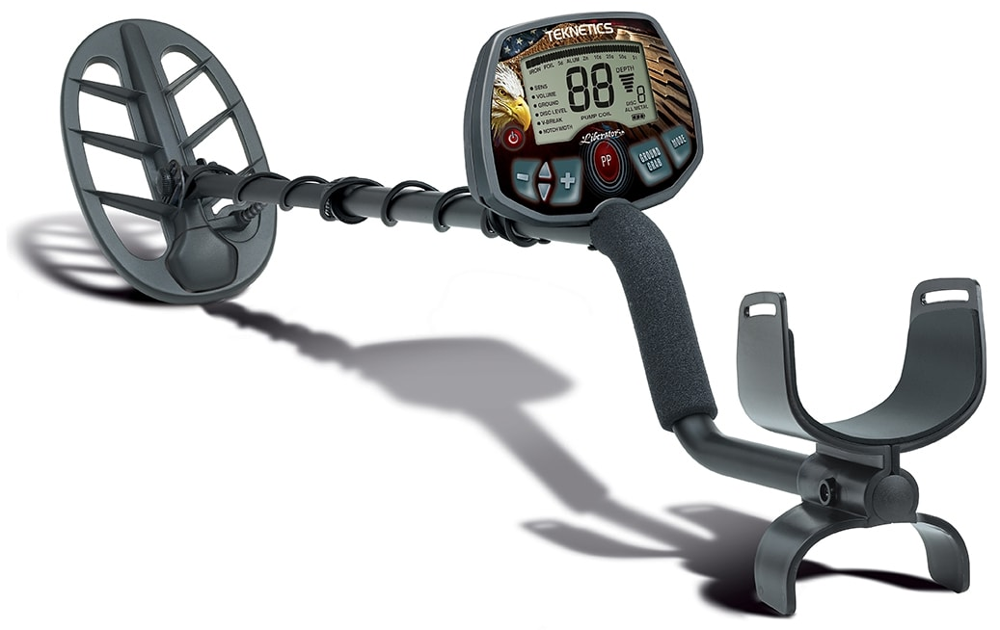
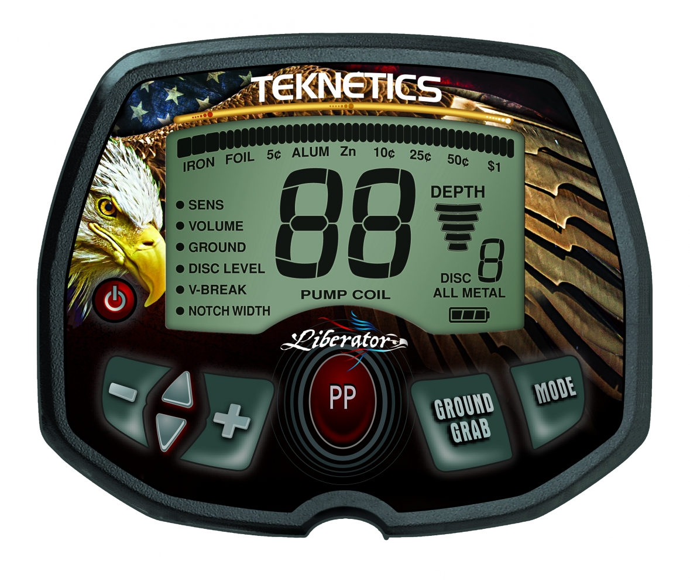
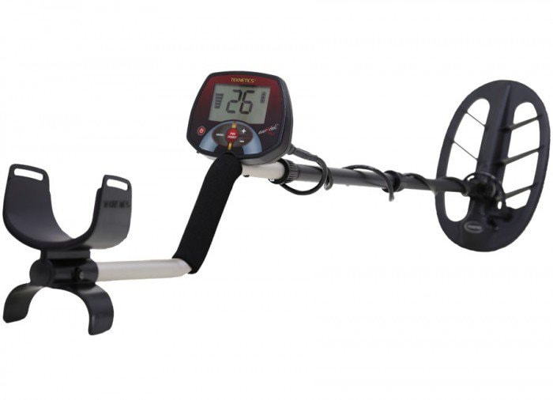
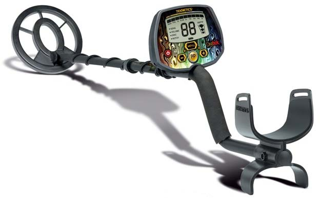
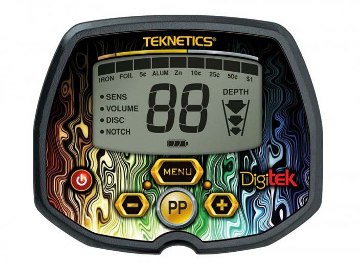
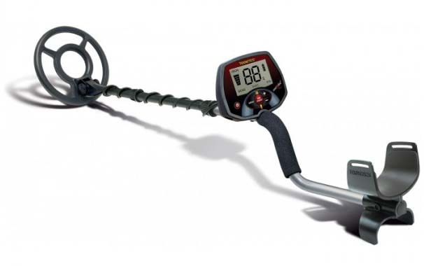
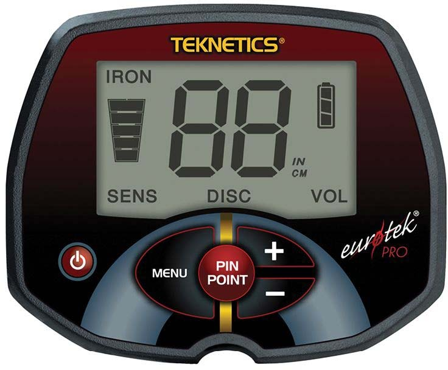
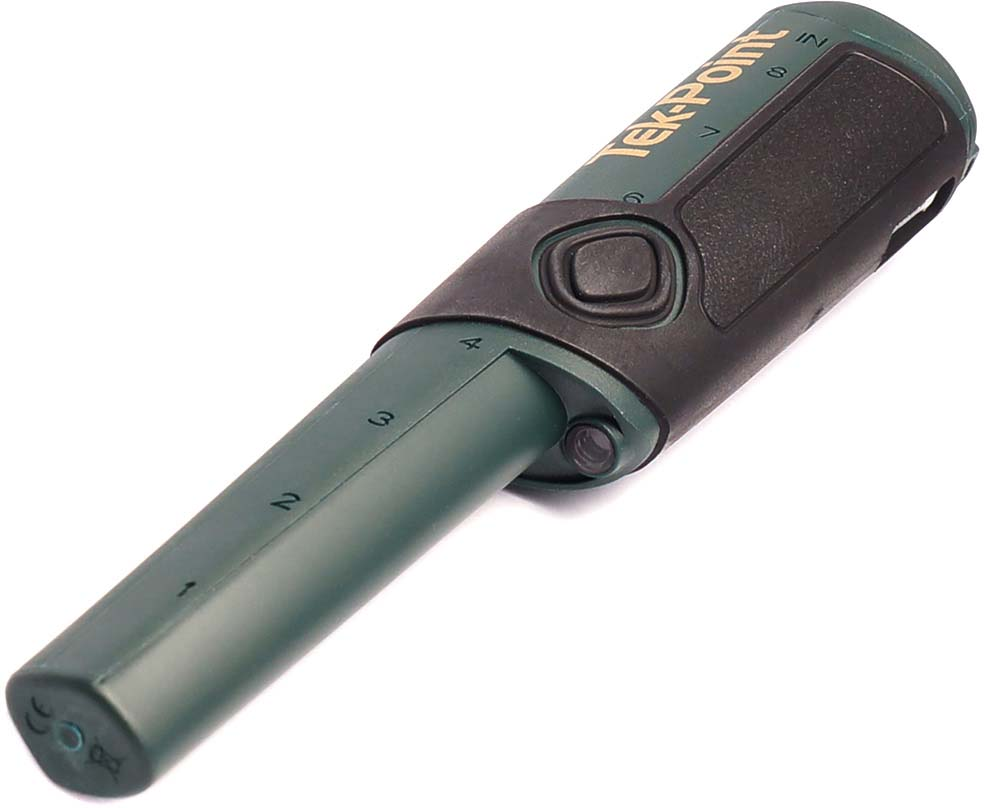
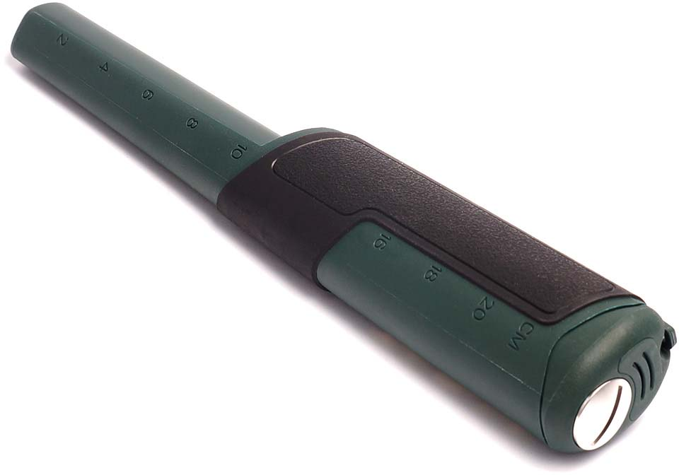

Liberator 8", 11"


Описание:
- Тип: Грунтовый металлоискатель
- Экран (Дисплей): Есть
- Подсветка: Нет
- Электронная схема: VLF
- Рабочая частота: 7,81 кГц
- Программы для поиска, количество: 7
- VDI/TargetID: Есть
- Баланс грунта, ручной: Есть
- Баланс грунта, авто: Нет
- Отстройка помех: Нет
- Звук, количество тонов: 4
- Регулировка громкости: Есть
- Режим пинпоинт: Есть
- Разъем для наушников: Есть
- Вес в собранном виде: 1 кг
- Регулируемый размер: 92-128 см
- Питание: 1x 9V (не входит в комплект)
Eurotek PRO 11" DD (Maximal)

Описание:
- 2х-значный цифровой идентификатор цели (Target ID) и дискриминации металла
- Быстрый запуск одним нажатием
- Изменяемая дискриминация железа
- Быстрый высокочувствительный отклик от цели
- Регулировка чувствительности/глубины залегания
- Индикатор разряда батарей
- Индикатор глубины залегания
- 3-х тональная звуковая идентификация цели (V.C.O.) с исключением железа, с регулировкой громкости.
- Разъем для подключения наушников стандартный jack-6.3мм
- 5ти сегментный индикатор глубины залегания цели
- Встроенный динамик
- Длина: от 100 до 122 см регулируемая
- Вес: 1,0 кг
- Основная рабочая частота: 7.81 кГц
- Питание: Крона 9 V - 1 шт (не входит в комплект).
- До 40 часов непрерывной работы при использовании Alkaline батареи
В комплектацию дополнительно входит защита на катушку, наушники и чехол на блок управления.
Eurotek PRO 11" DD
Описание:
- 2х-значный цифровой идентификатор цели (Target ID) и дискриминации металла
- Быстрый запуск одним нажатием
- Изменяемая дискриминация железа
- Быстрый высокочувствительный отклик от цели
- Регулировка чувствительности/глубины залегания
- Индикатор разряда батарей
- Индикатор глубины залегания
- 3-х тональная звуковая идентификация цели (V.C.O.) с исключением железа, с регулировкой громкости.
- Разъем для подключения наушников стандартный jack-6.3мм
- 5ти сегментный индикатор глубины залегания цели
- Встроенный динамик
- Длина: от 100 до 122 см регулируемая
- Вес: 1,0 кг
- Основная рабочая частота: 7.81 кГц
- Питание: Крона 9 V - 1 шт (не входит в комплект).
- До 40 часов непрерывной работы при использовании Alkaline батареи
Digitek 7"


Описание:
- Принцип работы: VLF
- Рабочая частота: 7,69 кГц
- Вес: 1,04 кг
- Дискриминация: Есть
- Режим пинпойнта: Есть
- Чувствительность: регулируемая
- Аудио: 3 тона
- Громкость: регулируемая
- Индикатор заряда батареи: Есть
- Глубиномер: Есть
- Глубина обнаружения монет: 20 см.
- Максимальная глубина: 50-60 см.
Eurotek PRO


Описание:
- 2х-значный цифровой идентификатор цели (Target ID) и дискриминации металла
- Быстрый запуск одним нажатием
- Изменяемая дискриминация железа
- Быстрый высокочувствительный отклик от цели
- Регулировка чувствительности/глубины залегания
- Индикатор разряда батарей
- Индикатор глубины залегания
- 3-х тональная звуковая идентификация цели (V.C.O.) с исключением железа, с регулировкой громкости.
- Разъем для подключения наушников стандартный jack-6.3мм
- 5ти сегментный индикатор глубины залегания цели
- Встроенный динамик
- Длина: от 100 до 122 см регулируемая
- Вес: 1,0 кг
- Основная рабочая частота: 7.81 кГц
- Питание: Крона 9 V - 1 шт (не входит в комплект).Можно использовать перезаряжаемые аккумуляторы.
- До 40 часов непрерывной работы при использовании Alkaline батареи
Eurotek
Описание:
- 2х-значный цифровой идентификатор цели (Target ID) и дискриминации металла
- Регулировка чувствительности/дискриминации
- Управление с помощью 3х кнопок, быстрый запуск одним нажатием
- Изменяемая дискриминация железа
- Быстрый высокочувствительный отклик от цели
- 2х тональная пропорциональная звуковая идентификация цели (V.C.O.)
- Разъем для подключения наушников стандартный jack-6.3мм
- 3х сегментный индикатор глубины залегания цели
- Встроенный динамик
- Длина: от 100 до 122 см регулируемая
- Вес: 1,0 кг
- Основная рабочая частота: 7.81 кГц
- Питание: Крона 9 V-1 шт (не входит в комплект). Можно использовать перезаряжаемые аккумуляторы.
- До 40 часов непрерывной работы при использовании Alkaline батареи
Tek-Point

